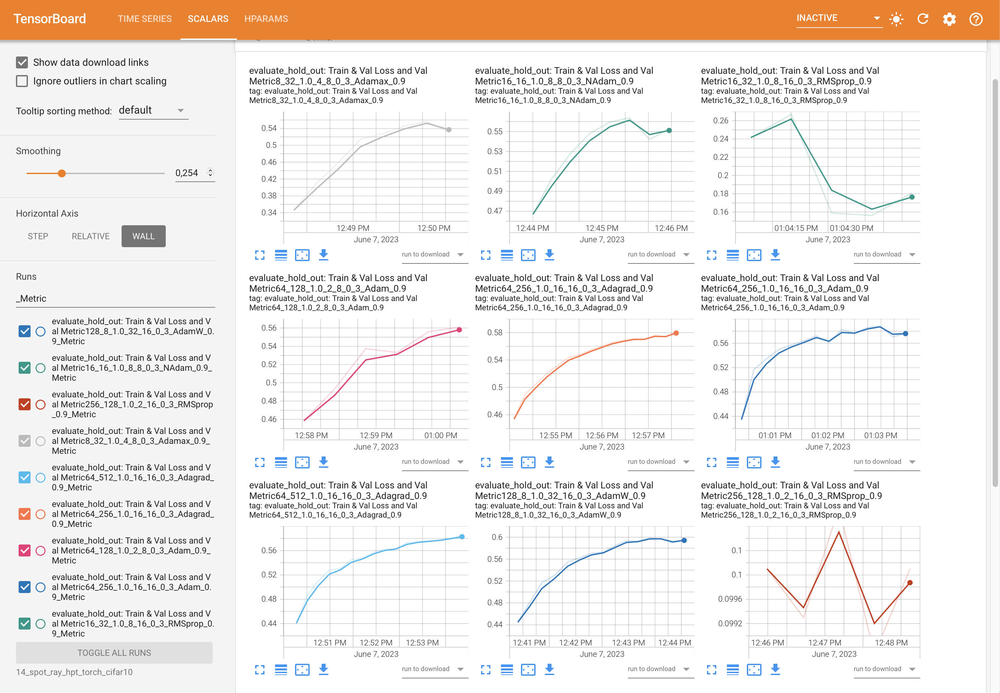
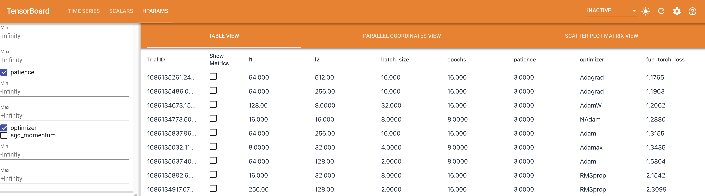
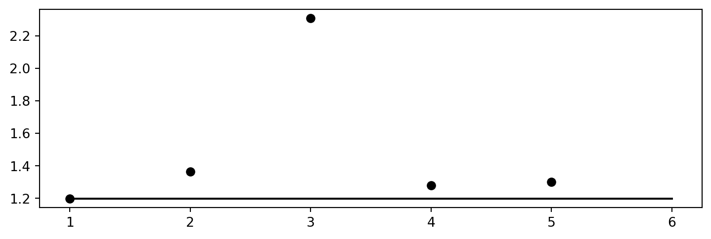
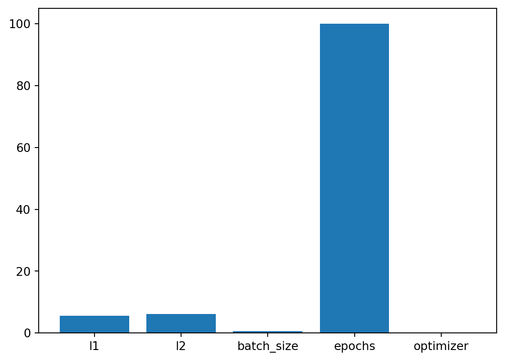
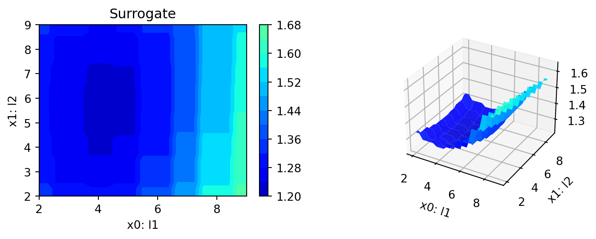

pip list | grep "spot[RiverPython]"spotPython 0.2.31
spotRiver 0.0.93Note: you may need to restart the kernel to use updated packages.spotPythonIn this tutorial, we will show how spotPython can be integrated into the PyTorch training workflow. It is based on the tutorial “Hyperparameter Tuning with Ray Tune” from the PyTorch documentation (PyTorch 2023a), which is an extension of the tutorial “Training a Classifier” (PyTorch 2023b) for training a CIFAR10 image classifier.
This document refers to the following software versions:
python: 3.10.10torch: 2.0.1torchvision: 0.15.0pip list | grep "spot[RiverPython]"spotPython 0.2.31
spotRiver 0.0.93Note: you may need to restart the kernel to use updated packages.spotPython can be installed via pip1.
!pip install spotPythonspotPython from gitHub.# import sys
# !{sys.executable} -m pip install --upgrade build
# !{sys.executable} -m pip install --upgrade --force-reinstall spotPythonResults that refer to the Ray Tune package are taken from https://PyTorch.org/tutorials/beginner/hyperparameter_tuning_tutorial.html2.
Before we consider the detailed experimental setup, we select the parameters that affect run time, initial design size and the device that is used.
MAX_TIME = 30
INIT_SIZE = 10
DEVICE = "cpu" # "cuda:0"from spotPython.utils.device import getDevice
DEVICE = getDevice(DEVICE)
print(DEVICE)cpuimport os
import copy
import socket
import warnings
from datetime import datetime
from dateutil.tz import tzlocal
start_time = datetime.now(tzlocal())
HOSTNAME = socket.gethostname().split(".")[0]
experiment_name = '14-torch' + "_" + HOSTNAME + "_" + str(MAX_TIME) + "min_" + str(INIT_SIZE) + "init_" + str(start_time).split(".", 1)[0].replace(' ', '_')
experiment_name = experiment_name.replace(':', '-')
print(experiment_name)
if not os.path.exists('./figures'):
os.makedirs('./figures')
warnings.filterwarnings("ignore")14-torch_p040025_30min_10init_2023-06-16_13-25-15fun_control DictionaryspotPython uses a Python dictionary for storing the information required for the hyperparameter tuning process. This dictionary is called fun_control and is initialized with the function fun_control_init. The function fun_control_init returns a skeleton dictionary. The dictionary is filled with the required information for the hyperparameter tuning process. It stores the hyperparameter tuning settings, e.g., the deep learning network architecture that should be tuned, the classification (or regression) problem, and the data that is used for the tuning. The dictionary is used as an input for the SPOT function.
from spotPython.utils.init import fun_control_init
fun_control = fun_control_init(task="classification",
tensorboard_path="runs/14_spot_ray_hpt_torch_cifar10",
device=DEVICE,)The data loading process is implemented in the same manner as described in the Section “Data loaders” in PyTorch (2023a). The data loaders are wrapped into the function load_data_cifar10 which is identical to the function load_data in PyTorch (2023a). A global data directory is used, which allows sharing the data directory between different trials. The method load_data_cifar10 is part of the spotPython package and can be imported from spotPython.data.torchdata.
In the following step, the test and train data are added to the dictionary fun_control.
from spotPython.data.torchdata import load_data_cifar10
train, test = load_data_cifar10()
n_samples = len(train)
# add the dataset to the fun_control
fun_control.update({
"train": train,
"test": test,
"n_samples": n_samples})Files already downloaded and verifiedFiles already downloaded and verifiedAfter the training and test data are specified and added to the fun_control dictionary, spotPython allows the specification of a data preprocessing pipeline, e.g., for the scaling of the data or for the one-hot encoding of categorical variables. The preprocessing model is called prep_model (“preparation” or pre-processing) and includes steps that are not subject to the hyperparameter tuning process. The preprocessing model is specified in the fun_control dictionary. The preprocessing model can be implemented as a sklearn pipeline. The following code shows a typical preprocessing pipeline:
categorical_columns = ["cities", "colors"]
one_hot_encoder = OneHotEncoder(handle_unknown="ignore",
sparse_output=False)
prep_model = ColumnTransformer(
transformers=[
("categorical", one_hot_encoder, categorical_columns),
],
remainder=StandardScaler(),
)Because the Ray Tune (ray[tune]) hyperparameter tuning as described in PyTorch (2023a) does not use a preprocessing model, the preprocessing model is set to None here.
prep_model = None
fun_control.update({"prep_model": prep_model})algorithm and core_model_hyper_dictThe same neural network model as implemented in the section “Configurable neural network” of the PyTorch tutorial (PyTorch 2023a) is used here. We will show the implementation from PyTorch (2023a) in Section 13.4.2.1 first, before the extended implementation with spotPython is shown in ?sec-implementation-with-spotpython.
We used the same hyperparameters that are implemented as configurable in the PyTorch tutorial. We specify the layer sizes, namely l1 and l2, of the fully connected layers:
class Net(nn.Module):
def __init__(self, l1=120, l2=84):
super(Net, self).__init__()
self.conv1 = nn.Conv2d(3, 6, 5)
self.pool = nn.MaxPool2d(2, 2)
self.conv2 = nn.Conv2d(6, 16, 5)
self.fc1 = nn.Linear(16 * 5 * 5, l1)
self.fc2 = nn.Linear(l1, l2)
self.fc3 = nn.Linear(l2, 10)
def forward(self, x):
x = self.pool(F.relu(self.conv1(x)))
x = self.pool(F.relu(self.conv2(x)))
x = x.view(-1, 16 * 5 * 5)
x = F.relu(self.fc1(x))
x = F.relu(self.fc2(x))
x = self.fc3(x)
return x
The learning rate, i.e., lr, of the optimizer is made configurable, too:
optimizer = optim.SGD(net.parameters(), lr=config["lr"], momentum=0.9)spotPython implements a class which is similar to the class described in the PyTorch tutorial. The class is called Net_CIFAR10 and is implemented in the file netcifar10.py.
from torch import nn
import torch.nn.functional as F
import spotPython.torch.netcore as netcore
class Net_CIFAR10(netcore.Net_Core):
def __init__(self, l1, l2, lr_mult, batch_size, epochs, k_folds, patience,
optimizer, sgd_momentum):
super(Net_CIFAR10, self).__init__(
lr_mult=lr_mult,
batch_size=batch_size,
epochs=epochs,
k_folds=k_folds,
patience=patience,
optimizer=optimizer,
sgd_momentum=sgd_momentum,
)
self.conv1 = nn.Conv2d(3, 6, 5)
self.pool = nn.MaxPool2d(2, 2)
self.conv2 = nn.Conv2d(6, 16, 5)
self.fc1 = nn.Linear(16 * 5 * 5, l1)
self.fc2 = nn.Linear(l1, l2)
self.fc3 = nn.Linear(l2, 10)
def forward(self, x):
x = self.pool(F.relu(self.conv1(x)))
x = self.pool(F.relu(self.conv2(x)))
x = x.view(-1, 16 * 5 * 5)
x = F.relu(self.fc1(x))
x = F.relu(self.fc2(x))
x = self.fc3(x)
return xNet_Core classNet_CIFAR10 inherits from the class Net_Core which is implemented in the file netcore.py. It implements the additional attributes that are common to all neural network models. The Net_Core class is implemented in the file netcore.py. It implements hyperparameters as attributes, that are not used by the core_model, e.g.:
optimizer),lr),batch_size),epochs),k_folds), andpatience).Users can add further attributes to the class. The class Net_Core is shown below.
from torch import nn
class Net_Core(nn.Module):
def __init__(self, lr_mult, batch_size, epochs, k_folds, patience,
optimizer, sgd_momentum):
super(Net_Core, self).__init__()
self.lr_mult = lr_mult
self.batch_size = batch_size
self.epochs = epochs
self.k_folds = k_folds
self.patience = patience
self.optimizer = optimizer
self.sgd_momentum = sgd_momentumComparing the class Net from the PyTorch tutorial and the class Net_CIFAR10 from spotPython, we see that the class Net_CIFAR10 has additional attributes and does not inherit from nn directly. It adds an additional class, Net_core, that takes care of additional attributes that are common to all neural network models, e.g., the learning rate multiplier lr_mult or the batch size batch_size.
spotPython’s core_model implements an instance of the Net_CIFAR10 class. In addition to the basic neural network model, the core_model can use these additional attributes. spotPython provides methods for handling these additional attributes to guarantee 100% compatibility with the PyTorch classes. The method add_core_model_to_fun_control adds the hyperparameters and additional attributes to the fun_control dictionary. The method is shown below.
from spotPython.torch.netcifar10 import Net_CIFAR10
from spotPython.data.torch_hyper_dict import TorchHyperDict
from spotPython.hyperparameters.values import add_core_model_to_fun_control
core_model = Net_CIFAR10
fun_control = add_core_model_to_fun_control(core_model=core_model,
fun_control=fun_control,
hyper_dict=TorchHyperDict,
filename=None)In Section 13.5.1, we first describe how to configure the search space with ray[tune] (as shown in PyTorch (2023a)) and then how to configure the search space with spotPython in ?sec-configuring-the-search-space-with-spotpython.
Ray Tune’s search space can be configured as follows (PyTorch 2023a):
config = {
"l1": tune.sample_from(lambda _: 2**np.random.randint(2, 9)),
"l2": tune.sample_from(lambda _: 2**np.random.randint(2, 9)),
"lr": tune.loguniform(1e-4, 1e-1),
"batch_size": tune.choice([2, 4, 8, 16])
}The tune.sample_from() function enables the user to define sample methods to obtain hyperparameters. In this example, the l1 and l2 parameters should be powers of 2 between 4 and 256, so either 4, 8, 16, 32, 64, 128, or 256. The lr (learning rate) should be uniformly sampled between 0.0001 and 0.1. Lastly, the batch size is a choice between 2, 4, 8, and 16.
At each trial, ray[tune] will randomly sample a combination of parameters from these search spaces. It will then train a number of models in parallel and find the best performing one among these. ray[tune] uses the ASHAScheduler which will terminate bad performing trials early.
hyper_dict Hyperparameters for the Selected AlgorithmspotPython uses JSON files for the specification of the hyperparameters. Users can specify their individual JSON files, or they can use the JSON files provided by spotPython. The JSON file for the core_model is called torch_hyper_dict.json.
In contrast to ray[tune], spotPython can handle numerical, boolean, and categorical hyperparameters. They can be specified in the JSON file in a similar way as the numerical hyperparameters as shown below. Each entry in the JSON file represents one hyperparameter with the following structure: type, default, transform, lower, and upper.
"factor_hyperparameter": {
"levels": ["A", "B", "C"],
"type": "factor",
"default": "B",
"transform": "None",
"core_model_parameter_type": "str",
"lower": 0,
"upper": 2},The corresponding entries for the Net_CIFAR10 class are shown below.
{"Net_CIFAR10":
{
"l1": {
"type": "int",
"default": 5,
"transform": "transform_power_2_int",
"lower": 2,
"upper": 9},
"l2": {
"type": "int",
"default": 5,
"transform": "transform_power_2_int",
"lower": 2,
"upper": 9},
"lr_mult": {
"type": "float",
"default": 1.0,
"transform": "None",
"lower": 0.1,
"upper": 10},
"batch_size": {
"type": "int",
"default": 4,
"transform": "transform_power_2_int",
"lower": 1,
"upper": 4},
"epochs": {
"type": "int",
"default": 3,
"transform": "transform_power_2_int",
"lower": 1,
"upper": 4},
"k_folds": {
"type": "int",
"default": 2,
"transform": "None",
"lower": 2,
"upper": 3},
"patience": {
"type": "int",
"default": 5,
"transform": "None",
"lower": 2,
"upper": 10},
"optimizer": {
"levels": ["Adadelta",
"Adagrad",
"Adam",
"AdamW",
"SparseAdam",
"Adamax",
"ASGD",
"LBFGS",
"NAdam",
"RAdam",
"RMSprop",
"Rprop",
"SGD"],
"type": "factor",
"default": "SGD",
"transform": "None",
"class_name": "torch.optim",
"core_model_parameter_type": "str",
"lower": 0,
"upper": 12},
"sgd_momentum": {
"type": "float",
"default": 0.0,
"transform": "None",
"lower": 0.0,
"upper": 1.0}
}
}Ray tune (PyTorch 2023a) does not provide a way to change the specified hyperparameters without re-compilation. However, spotPython provides functions for modifying the hyperparameters, their bounds and factors as well as for activating and de-activating hyperparameters without re-compilation of the Python source code. These functions are described in the following.
hyper_dict Hyperparameters for the Selected Algorithm aka core_modelAfter specifying the model, the corresponding hyperparameters, their types and bounds are loaded from the JSON file torch_hyper_dict.json. After loading, the user can modify the hyperparameters, e.g., the bounds. spotPython provides a simple rule for de-activating hyperparameters: If the lower and the upper bound are set to identical values, the hyperparameter is de-activated. This is useful for the hyperparameter tuning, because it allows to specify a hyperparameter in the JSON file, but to de-activate it in the fun_control dictionary. This is done in the next step.
Since the hyperparameter k_folds is not used in the PyTorch tutorial, it is de-activated here by setting the lower and upper bound to the same value. Note, k_folds is of type “integer”.
from spotPython.hyperparameters.values import modify_hyper_parameter_bounds
fun_control = modify_hyper_parameter_bounds(fun_control,
"batch_size", bounds=[1, 5])
fun_control = modify_hyper_parameter_bounds(fun_control,
"k_folds", bounds=[0, 0])
fun_control = modify_hyper_parameter_bounds(fun_control,
"patience", bounds=[3, 3])In a similar manner as for the numerical hyperparameters, the categorical hyperparameters can be modified. New configurations can be chosen by adding or deleting levels. For example, the hyperparameter optimizer can be re-configured as follows:
In the following setting, two optimizers ("SGD" and "Adam") will be compared during the spotPython hyperparameter tuning. The hyperparameter optimizer is active.
from spotPython.hyperparameters.values import modify_hyper_parameter_levels
fun_control = modify_hyper_parameter_levels(fun_control,
"optimizer", ["SGD", "Adam"])The hyperparameter optimizer can be de-activated by choosing only one value (level), here: "SGD".
fun_control = modify_hyper_parameter_levels(fun_control, "optimizer", ["SGD"])As discussed in ?sec-optimizers, there are some issues with the LBFGS optimizer. Therefore, the usage of the LBFGS optimizer is not deactivated in spotPython by default. However, the LBFGS optimizer can be activated by adding it to the list of optimizers. Rprop was removed, because it does perform very poorly (as some pre-tests have shown). However, it can also be activated by adding it to the list of optimizers. Since SparseAdam does not support dense gradients, Adam was used instead. Therefore, there are 10 default optimizers:
fun_control = modify_hyper_parameter_levels(fun_control, "optimizer",
["Adadelta", "Adagrad", "Adam", "AdamW", "Adamax", "ASGD",
"NAdam", "RAdam", "RMSprop", "SGD"])Table 13.1 shows some of the optimizers available in PyTorch:
\(a\) denotes (0.9,0.999), \(b\) (0.5,1.2), and \(c\) (1e-6, 50), respectively. \(R\) denotes required, but unspecified. “m” denotes momentum, “w_d” weight_decay, “d” dampening, “n” nesterov, “r” rho, “l_s” learning rate for scaling delta, “l_d” lr_decay, “b” betas, “l” lambd, “a” alpha, “m_d” for momentum_decay, “e” etas, and “s_s” for step_sizes.
| Optimizer | lr | m | w_d | d | n | r | l_s | l_d | b | l | a | m_d | e | s_s |
|---|---|---|---|---|---|---|---|---|---|---|---|---|---|---|
| Adadelta | - | - | 0. | - | - | 0.9 | 1. | - | - | - | - | - | - | - |
| Adagrad | 1e-2 | - | 0. | - | - | - | - | 0. | - | - | - | - | - | - |
| Adam | 1e-3 | - | 0. | - | - | - | - | - | \(a\) | - | - | - | - | - |
| AdamW | 1e-3 | - | 1e-2 | - | - | - | - | - | \(a\) | - | - | - | - | - |
| SparseAdam | 1e-3 | - | - | - | - | - | - | - | \(a\) | - | - | - | - | - |
| Adamax | 2e-3 | - | 0. | - | - | - | - | - | \(a\) | - | - | - | - | - |
| ASGD | 1e-2 | .9 | 0. | - | F | - | - | - | - | 1e-4 | .75 | - | - | - |
| LBFGS | 1. | - | - | - | - | - | - | - | - | - | - | - | - | - |
| NAdam | 2e-3 | - | 0. | - | - | - | - | - | \(a\) | - | - | 0 | - | - |
| RAdam | 1e-3 | - | 0. | - | - | - | - | - | \(a\) | - | - | - | - | - |
| RMSprop | 1e-2 | 0. | 0. | - | - | - | - | - | \(a\) | - | - | - | - | - |
| Rprop | 1e-2 | - | - | - | - | - | - | - | - | - | \(b\) | \(c\) | - | - |
| SGD | \(R\) | 0. | 0. | 0. | F | - | - | - | - | - | - | - | - | - |
spotPython implements an optimization handler that maps the optimizer names to the corresponding PyTorch optimizers.
We recommend deactivating PyTorch’s LBFGS optimizer, because it does not perform very well. The PyTorch documentation, see https://pytorch.org/docs/stable/generated/torch.optim.LBFGS.html#torch.optim.LBFGS, states:
This is a very memory intensive optimizer (it requires additional
param_bytes * (history_size + 1)bytes). If it doesn’t fit in memory try reducing the history size, or use a different algorithm.
Furthermore, the LBFGS optimizer is not compatible with the PyTorch tutorial. The reason is that the LBFGS optimizer requires the closure function, which is not implemented in the PyTorch tutorial. Therefore, the LBFGS optimizer is recommended here. Since there are ten optimizers in the portfolio, it is not recommended tuning the hyperparameters that effect one single optimizer only.
spotPython provides a multiplier for the default learning rates, lr_mult, because optimizers use different learning rates. Using a multiplier for the learning rates might enable a simultaneous tuning of the learning rates for all optimizers. However, this is not recommended, because the learning rates are not comparable across optimizers. Therefore, we recommend fixing the learning rate for all optimizers if multiple optimizers are used. This can be done by setting the lower and upper bounds of the learning rate multiplier to the same value as shown below.
Thus, the learning rate, which affects the SGD optimizer, will be set to a fixed value. We choose the default value of 1e-3 for the learning rate, because it is used in other PyTorch examples (it is also the default value used by spotPython as defined in the optimizer_handler() method). We recommend tuning the learning rate later, when a reduced set of optimizers is fixed. Here, we will demonstrate how to select in a screening phase the optimizers that should be used for the hyperparameter tuning.
For the same reason, we will fix the sgd_momentum to 0.9.
fun_control = modify_hyper_parameter_bounds(fun_control,
"lr_mult", bounds=[1.0, 1.0])
fun_control = modify_hyper_parameter_bounds(fun_control,
"sgd_momentum", bounds=[0.9, 0.9])The evaluation procedure requires the specification of the way how the data is split into a train and a test set and the loss function (and a metric). As a default, spotPython provides a standard hold-out data split and cross validation.
If a hold-out data split is used, the data will be partitioned into a training, a validation, and a test data set. The split depends on the setting of the eval parameter. If eval is set to train_hold_out, one data set, usually the original training data set, is split into a new training and a validation data set. The training data set is used for training the model. The validation data set is used for the evaluation of the hyperparameter configuration and early stopping to prevent overfitting. In this case, the original test data set is not used.
spotPython returns the hyperparameters of the machine learning and deep learning models, e.g., number of layers, learning rate, or optimizer, but not the model weights. Therefore, after the SPOT run is finished, the corresponding model with the optimized architecture has to be trained again with the best hyperparameter configuration. The training is performed on the training data set. The test data set is used for the final evaluation of the model.
Summarizing, the following splits are performed in the hold-out setting:
spotPython with eval set to train_hold_out to determine the best hyperparameter configuration.train_tuned(model_spot, train, "model_spot.pt").test_tuned(model_spot, test, "model_spot.pt")These steps will be exemplified in the following sections.
In addition to this hold-out setting, spotPython provides another hold-out setting, where an explicit test data is specified by the user that will be used as the validation set. To choose this option, the eval parameter is set to test_hold_out. In this case, the training data set is used for the model training. Then, the explicitly defined test data set is used for the evaluation of the hyperparameter configuration (the validation).
The cross validation setting is used by setting the eval parameter to train_cv or test_cv. In both cases, the data set is split into \(k\) folds. The model is trained on \(k-1\) folds and evaluated on the remaining fold. This is repeated \(k\) times, so that each fold is used exactly once for evaluation. The final evaluation is performed on the test data set. The cross validation setting is useful for small data sets, because it allows to use all data for training and evaluation. However, it is computationally expensive, because the model has to be trained \(k\) times.
Combinations of the above settings are possible, e.g., cross validation can be used for training and hold-out for evaluation or vice versa. Also, cross validation can be used for training and testing. Because cross validation is not used in the PyTorch tutorial (PyTorch 2023a), it is not considered further here.
An overview of the training evaluations is shown in Table 13.2. "train_cv" and "test_cv" use sklearn.model_selection.KFold() internally. More details on the data splitting are provided in Section 20.14 (in the Appendix).
eval |
train |
test |
function | comment |
|---|---|---|---|---|
"train_hold_out" |
\(\checkmark\) | train_one_epoch(), validate_one_epoch() for early stopping |
splits the train data set internally |
|
"test_hold_out" |
\(\checkmark\) | \(\checkmark\) | train_one_epoch(), validate_one_epoch() for early stopping |
use the test data set for validate_one_epoch() |
"train_cv" |
\(\checkmark\) | evaluate_cv(net, train) |
CV using the train data set |
|
"test_cv" |
\(\checkmark\) | evaluate_cv(net, test) |
CV using the test data set . Identical to "train_cv", uses only test data. |
train_tuned(model, train): train the model with the best hyperparameter configuration (or simply the default) on the training data set. It splits the traindata into new train and validation sets using create_train_val_data_loaders(), which calls torch.utils.data.random_split() internally. Currently, 60% of the data is used for training and 40% for validation. The train data is used for training the model with train_hold_out(). The validation data is used for early stopping using validate_fold_or_hold_out() on the validation data set.
test_tuned(model, test): test the model on the test data set. No data splitting is performed. The (trained) model is evaluated using the validate_fold_or_hold_out() function. Note: During training, "shuffle" is set to True, whereas during testing, "shuffle" is set to False.
Section 20.14.1.4 describes the final evaluation of the tuned architecture.
fun_control.update({
"eval": "train_hold_out",
"path": "torch_model.pt",
"shuffle": True})The key "loss_function" specifies the loss function which is used during the optimization. There are several different loss functions under PyTorch’s nn package. For example, a simple loss is MSELoss, which computes the mean-squared error between the output and the target. In this tutorial we will use CrossEntropyLoss, because it is also used in the PyTorch tutorial.
from torch.nn import CrossEntropyLoss
loss_function = CrossEntropyLoss()
fun_control.update({"loss_function": loss_function})In addition to the loss functions, spotPython provides access to a large number of metrics.
"metric_sklearn" is used for metrics that follow the scikit-learn conventions."river_metric" is used for the river based evaluation (Montiel et al. 2021) via eval_oml_iter_progressive, and"metric_torch" is used for the metrics from TorchMetrics.TorchMetrics is a collection of more than 90 PyTorch metrics, see https://torchmetrics.readthedocs.io/en/latest/. Because the PyTorch tutorial uses the accuracy as metric, we use the same metric here. Currently, accuracy is computed in the tutorial’s example code. We will use TorchMetrics instead, because it offers more flexibilty, e.g., it can be used for regression and classification. Furthermore, TorchMetrics offers the following advantages:
* A standardized interface to increase reproducibility
* Reduces Boilerplate
* Distributed-training compatible
* Rigorously tested
* Automatic accumulation over batches
* Automatic synchronization between multiple devicesTherefore, we set
import torchmetrics
metric_torch = torchmetrics.Accuracy(task="multiclass", num_classes=10).to(fun_control["device"])
fun_control.update({"metric_torch": metric_torch})The following code passes the information about the parameter ranges and bounds to spot.
from spotPython.hyperparameters.values import (
get_var_type,
get_var_name,
get_bound_values
)
var_type = get_var_type(fun_control)
var_name = get_var_name(fun_control)
fun_control.update({"var_type": var_type,
"var_name": var_name})
lower = get_bound_values(fun_control, "lower")
upper = get_bound_values(fun_control, "upper")Now, the dictionary fun_control contains all information needed for the hyperparameter tuning. Before the hyperparameter tuning is started, it is recommended to take a look at the experimental design. The method gen_design_table generates a design table as follows:
from spotPython.utils.eda import gen_design_table
print(gen_design_table(fun_control))| name | type | default | lower | upper | transform |
|--------------|--------|-----------|---------|---------|-----------------------|
| l1 | int | 5 | 2 | 9 | transform_power_2_int |
| l2 | int | 5 | 2 | 9 | transform_power_2_int |
| lr_mult | float | 1.0 | 1 | 1 | None |
| batch_size | int | 4 | 1 | 5 | transform_power_2_int |
| epochs | int | 3 | 3 | 4 | transform_power_2_int |
| k_folds | int | 1 | 0 | 0 | None |
| patience | int | 5 | 3 | 3 | None |
| optimizer | factor | SGD | 0 | 9 | None |
| sgd_momentum | float | 0.0 | 0.9 | 0.9 | None |This allows to check if all information is available and if the information is correct. ?tbl-design shows the experimental design for the hyperparameter tuning. The table shows the hyperparameters, their types, default values, lower and upper bounds, and the transformation function. The transformation function is used to transform the hyperparameter values from the unit hypercube to the original domain. The transformation function is applied to the hyperparameter values before the evaluation of the objective function. Hyperparameter transformations are shown in the column “transform”, e.g., the l1 default is 5, which results in the value \(2^5 = 32\) for the network, because the transformation transform_power_2_int was selected in the JSON file. The default value of the batch_size is set to 4, which results in a batch size of \(2^4 = 16\).
fun_torchThe objective function fun_torch is selected next. It implements an interface from PyTorch’s training, validation, and testing methods to spotPython.
from spotPython.fun.hypertorch import HyperTorch
fun = HyperTorch().fun_torchWe add the default setting to the initial design:
from spotPython.hyperparameters.values import get_default_hyperparameters_as_array
hyper_dict=TorchHyperDict().load()
X_start = get_default_hyperparameters_as_array(fun_control, hyper_dict)The spotPython hyperparameter tuning is started by calling the Spot function. Here, we will run the tuner for approximately 30 minutes (max_time). Note: the initial design is always evaluated in the spotPython run. As a consequence, the run may take longer than specified by max_time, because the evaluation time of initial design (here: init_size, 10 points) is performed independently of max_time. During the run, results from the training is shown. These results can be visualized with Tensorboard as will be shown in Section 13.13.
from spotPython.spot import spot
from math import inf
import numpy as np
spot_tuner = spot.Spot(fun=fun,
lower = lower,
upper = upper,
fun_evals = inf,
fun_repeats = 1,
max_time = MAX_TIME,
noise = False,
tolerance_x = np.sqrt(np.spacing(1)),
var_type = var_type,
var_name = var_name,
infill_criterion = "y",
n_points = 1,
seed=123,
log_level = 50,
show_models= False,
show_progress= True,
fun_control = fun_control,
design_control={"init_size": INIT_SIZE,
"repeats": 1},
surrogate_control={"noise": True,
"cod_type": "norm",
"min_theta": -4,
"max_theta": 3,
"n_theta": len(var_name),
"model_fun_evals": 10_000,
"log_level": 50
})
spot_tuner.run(X_start=X_start)
config: {'l1': 64, 'l2': 16, 'lr_mult': 1.0, 'batch_size': 16, 'epochs': 16, 'k_folds': 0, 'patience': 3, 'optimizer': 'NAdam', 'sgd_momentum': 0.9}
Epoch: 1Loss on hold-out set: 1.4469124261379243
Accuracy on hold-out set: 0.4721
MulticlassAccuracy value on hold-out data: 0.47209998965263367
Epoch: 2Loss on hold-out set: 1.31305874376297
Accuracy on hold-out set: 0.5222
MulticlassAccuracy value on hold-out data: 0.5221999883651733
Epoch: 3Loss on hold-out set: 1.2359856372833251
Accuracy on hold-out set: 0.56455
MulticlassAccuracy value on hold-out data: 0.56454998254776
Epoch: 4Loss on hold-out set: 1.2181343088388443
Accuracy on hold-out set: 0.5775
MulticlassAccuracy value on hold-out data: 0.5774999856948853
Epoch: 5Loss on hold-out set: 1.2329452365875244
Accuracy on hold-out set: 0.5659
MulticlassAccuracy value on hold-out data: 0.5659000277519226
Epoch: 6Loss on hold-out set: 1.2080311764478684
Accuracy on hold-out set: 0.5836
MulticlassAccuracy value on hold-out data: 0.5835999846458435
Epoch: 7Loss on hold-out set: 1.176747626900673
Accuracy on hold-out set: 0.5916
MulticlassAccuracy value on hold-out data: 0.5916000008583069
Epoch: 8Loss on hold-out set: 1.1768991708993912
Accuracy on hold-out set: 0.60265
MulticlassAccuracy value on hold-out data: 0.602649986743927
Epoch: 9Loss on hold-out set: 1.1978918849468232
Accuracy on hold-out set: 0.597
MulticlassAccuracy value on hold-out data: 0.597000002861023
Epoch: 10Loss on hold-out set: 1.220011973261833
Accuracy on hold-out set: 0.5891
MulticlassAccuracy value on hold-out data: 0.5891000032424927
Early stopping at epoch 9
Returned to Spot: Validation loss: 1.220011973261833
----------------------------------------------
config: {'l1': 16, 'l2': 128, 'lr_mult': 1.0, 'batch_size': 4, 'epochs': 16, 'k_folds': 0, 'patience': 3, 'optimizer': 'NAdam', 'sgd_momentum': 0.9}
Epoch: 1Loss on hold-out set: 1.674745565995574
Accuracy on hold-out set: 0.40405
MulticlassAccuracy value on hold-out data: 0.40404999256134033
Epoch: 2Loss on hold-out set: 1.5271735558517276
Accuracy on hold-out set: 0.4645
MulticlassAccuracy value on hold-out data: 0.4645000100135803
Epoch: 3Loss on hold-out set: 1.4611441126048565
Accuracy on hold-out set: 0.4618
MulticlassAccuracy value on hold-out data: 0.4618000090122223
Epoch: 4Loss on hold-out set: 1.5492931324899197
Accuracy on hold-out set: 0.4726
MulticlassAccuracy value on hold-out data: 0.4726000130176544
Epoch: 5Loss on hold-out set: 1.4211516805619002
Accuracy on hold-out set: 0.4972
MulticlassAccuracy value on hold-out data: 0.49720001220703125
Epoch: 6Loss on hold-out set: 1.4062915179379285
Accuracy on hold-out set: 0.51875
MulticlassAccuracy value on hold-out data: 0.518750011920929
Epoch: 7Loss on hold-out set: 1.3883056281790138
Accuracy on hold-out set: 0.5244
MulticlassAccuracy value on hold-out data: 0.524399995803833
Epoch: 8Loss on hold-out set: 1.4094017223760487
Accuracy on hold-out set: 0.52445
MulticlassAccuracy value on hold-out data: 0.5244500041007996
Epoch: 9Loss on hold-out set: 1.4296897574089467
Accuracy on hold-out set: 0.51315
MulticlassAccuracy value on hold-out data: 0.5131499767303467
Epoch: 10Loss on hold-out set: 1.424010799067095
Accuracy on hold-out set: 0.52325
MulticlassAccuracy value on hold-out data: 0.5232499837875366
Early stopping at epoch 9
Returned to Spot: Validation loss: 1.424010799067095
----------------------------------------------
config: {'l1': 32, 'l2': 8, 'lr_mult': 1.0, 'batch_size': 8, 'epochs': 8, 'k_folds': 0, 'patience': 3, 'optimizer': 'ASGD', 'sgd_momentum': 0.9}
Epoch: 1Loss on hold-out set: 2.004851306056976
Accuracy on hold-out set: 0.2406
MulticlassAccuracy value on hold-out data: 0.24060000479221344
Epoch: 2Loss on hold-out set: 1.8431704842090606
Accuracy on hold-out set: 0.3165
MulticlassAccuracy value on hold-out data: 0.3165000081062317
Epoch: 3Loss on hold-out set: 1.6983513696193695
Accuracy on hold-out set: 0.37445
MulticlassAccuracy value on hold-out data: 0.3744499981403351
Epoch: 4Loss on hold-out set: 1.6354168715953827
Accuracy on hold-out set: 0.39435
MulticlassAccuracy value on hold-out data: 0.39434999227523804
Epoch: 5Loss on hold-out set: 1.5970890524029733
Accuracy on hold-out set: 0.4107
MulticlassAccuracy value on hold-out data: 0.4106999933719635
Epoch: 6Loss on hold-out set: 1.5649568305253982
Accuracy on hold-out set: 0.4257
MulticlassAccuracy value on hold-out data: 0.42570000886917114
Epoch: 7Loss on hold-out set: 1.5401166947126388
Accuracy on hold-out set: 0.435
MulticlassAccuracy value on hold-out data: 0.4350000023841858
Epoch: 8Loss on hold-out set: 1.5382495282411575
Accuracy on hold-out set: 0.43555
MulticlassAccuracy value on hold-out data: 0.4355500042438507
Returned to Spot: Validation loss: 1.5382495282411575
----------------------------------------------
config: {'l1': 8, 'l2': 64, 'lr_mult': 1.0, 'batch_size': 4, 'epochs': 8, 'k_folds': 0, 'patience': 3, 'optimizer': 'Adamax', 'sgd_momentum': 0.9}
Epoch: 1Loss on hold-out set: 1.553777064293623
Accuracy on hold-out set: 0.42905
MulticlassAccuracy value on hold-out data: 0.4290499985218048
Epoch: 2Loss on hold-out set: 1.4513142427831889
Accuracy on hold-out set: 0.4786
MulticlassAccuracy value on hold-out data: 0.47859999537467957
Epoch: 3Loss on hold-out set: 1.3705304314404727
Accuracy on hold-out set: 0.51
MulticlassAccuracy value on hold-out data: 0.5099999904632568
Epoch: 4Loss on hold-out set: 1.3806017418071628
Accuracy on hold-out set: 0.5116
MulticlassAccuracy value on hold-out data: 0.5116000175476074
Epoch: 5Loss on hold-out set: 1.3333813215218484
Accuracy on hold-out set: 0.52655
MulticlassAccuracy value on hold-out data: 0.5265499949455261
Epoch: 6Loss on hold-out set: 1.2766956457909198
Accuracy on hold-out set: 0.551
MulticlassAccuracy value on hold-out data: 0.5509999990463257
Epoch: 7Loss on hold-out set: 1.2886655173575505
Accuracy on hold-out set: 0.5522
MulticlassAccuracy value on hold-out data: 0.5522000193595886
Epoch: 8Loss on hold-out set: 1.219032202488184
Accuracy on hold-out set: 0.57435
MulticlassAccuracy value on hold-out data: 0.5743499994277954
Returned to Spot: Validation loss: 1.219032202488184
----------------------------------------------
config: {'l1': 128, 'l2': 32, 'lr_mult': 1.0, 'batch_size': 8, 'epochs': 16, 'k_folds': 0, 'patience': 3, 'optimizer': 'AdamW', 'sgd_momentum': 0.9}
Epoch: 1Loss on hold-out set: 1.4385211018323898
Accuracy on hold-out set: 0.46835
MulticlassAccuracy value on hold-out data: 0.46834999322891235
Epoch: 2Loss on hold-out set: 1.3375152156710626
Accuracy on hold-out set: 0.51945
MulticlassAccuracy value on hold-out data: 0.5194500088691711
Epoch: 3Loss on hold-out set: 1.2668830600023269
Accuracy on hold-out set: 0.5507
MulticlassAccuracy value on hold-out data: 0.5507000088691711
Epoch: 4Loss on hold-out set: 1.2596713662147523
Accuracy on hold-out set: 0.55355
MulticlassAccuracy value on hold-out data: 0.5535500049591064
Epoch: 5Loss on hold-out set: 1.217724042326212
Accuracy on hold-out set: 0.5776
MulticlassAccuracy value on hold-out data: 0.5776000022888184
Epoch: 6Loss on hold-out set: 1.2067499593377113
Accuracy on hold-out set: 0.5776
MulticlassAccuracy value on hold-out data: 0.5776000022888184
Epoch: 7Loss on hold-out set: 1.2267552861630917
Accuracy on hold-out set: 0.58475
MulticlassAccuracy value on hold-out data: 0.5847499966621399
Epoch: 8Loss on hold-out set: 1.248773646146059
Accuracy on hold-out set: 0.58185
MulticlassAccuracy value on hold-out data: 0.581849992275238
Epoch: 9Loss on hold-out set: 1.2798547819003463
Accuracy on hold-out set: 0.58465
MulticlassAccuracy value on hold-out data: 0.5846499800682068
Early stopping at epoch 8
Returned to Spot: Validation loss: 1.2798547819003463
----------------------------------------------
config: {'l1': 512, 'l2': 16, 'lr_mult': 1.0, 'batch_size': 4, 'epochs': 16, 'k_folds': 0, 'patience': 3, 'optimizer': 'RMSprop', 'sgd_momentum': 0.9}
Epoch: 1Loss on hold-out set: 2.3046898485183718
Accuracy on hold-out set: 0.1005
MulticlassAccuracy value on hold-out data: 0.10050000250339508
Epoch: 2Loss on hold-out set: 2.3049974255084993
Accuracy on hold-out set: 0.0991
MulticlassAccuracy value on hold-out data: 0.09910000115633011
Epoch: 3Loss on hold-out set: 2.3051948410034178
Accuracy on hold-out set: 0.10125
MulticlassAccuracy value on hold-out data: 0.10125000029802322
Epoch: 4Loss on hold-out set: 2.304940327787399
Accuracy on hold-out set: 0.1003
MulticlassAccuracy value on hold-out data: 0.10029999911785126
Early stopping at epoch 3
Returned to Spot: Validation loss: 2.304940327787399
----------------------------------------------
config: {'l1': 8, 'l2': 8, 'lr_mult': 1.0, 'batch_size': 16, 'epochs': 8, 'k_folds': 0, 'patience': 3, 'optimizer': 'Adagrad', 'sgd_momentum': 0.9}
Epoch: 1Loss on hold-out set: 1.893515717601776
Accuracy on hold-out set: 0.26365
MulticlassAccuracy value on hold-out data: 0.26365000009536743
Epoch: 2Loss on hold-out set: 1.7967805968284607
Accuracy on hold-out set: 0.3056
MulticlassAccuracy value on hold-out data: 0.30559998750686646
Epoch: 3Loss on hold-out set: 1.7411822015762328
Accuracy on hold-out set: 0.3342
MulticlassAccuracy value on hold-out data: 0.334199994802475
Epoch: 4Loss on hold-out set: 1.7099980098724366
Accuracy on hold-out set: 0.3528
MulticlassAccuracy value on hold-out data: 0.35280001163482666
Epoch: 5Loss on hold-out set: 1.6845778544425964
Accuracy on hold-out set: 0.36495
MulticlassAccuracy value on hold-out data: 0.3649500012397766
Epoch: 6Loss on hold-out set: 1.6644452001571655
Accuracy on hold-out set: 0.368
MulticlassAccuracy value on hold-out data: 0.36800000071525574
Epoch: 7Loss on hold-out set: 1.6552868654251098
Accuracy on hold-out set: 0.37265
MulticlassAccuracy value on hold-out data: 0.37264999747276306
Epoch: 8Loss on hold-out set: 1.6364797782897949
Accuracy on hold-out set: 0.3788
MulticlassAccuracy value on hold-out data: 0.37880000472068787
Returned to Spot: Validation loss: 1.6364797782897949
----------------------------------------------
config: {'l1': 256, 'l2': 64, 'lr_mult': 1.0, 'batch_size': 16, 'epochs': 8, 'k_folds': 0, 'patience': 3, 'optimizer': 'RMSprop', 'sgd_momentum': 0.9}
Epoch: 1Loss on hold-out set: 2.3050730175018312
Accuracy on hold-out set: 0.0984
MulticlassAccuracy value on hold-out data: 0.09839999675750732
Epoch: 2Loss on hold-out set: 2.3037697750091555
Accuracy on hold-out set: 0.0984
MulticlassAccuracy value on hold-out data: 0.09839999675750732
Epoch: 3Loss on hold-out set: 2.304098579978943
Accuracy on hold-out set: 0.09765
MulticlassAccuracy value on hold-out data: 0.09764999896287918
Epoch: 4Loss on hold-out set: 2.3043115491867066
Accuracy on hold-out set: 0.09765
MulticlassAccuracy value on hold-out data: 0.09764999896287918
Epoch: 5Loss on hold-out set: 2.3033891632080077
Accuracy on hold-out set: 0.1023
MulticlassAccuracy value on hold-out data: 0.1023000031709671
Epoch: 6Loss on hold-out set: 2.3050381492614744
Accuracy on hold-out set: 0.09845
MulticlassAccuracy value on hold-out data: 0.09844999760389328
Epoch: 7Loss on hold-out set: 2.303712857055664
Accuracy on hold-out set: 0.1023
MulticlassAccuracy value on hold-out data: 0.1023000031709671
Epoch: 8Loss on hold-out set: 2.304168989753723
Accuracy on hold-out set: 0.0984
MulticlassAccuracy value on hold-out data: 0.09839999675750732
Early stopping at epoch 7
Returned to Spot: Validation loss: 2.304168989753723
----------------------------------------------
config: {'l1': 256, 'l2': 512, 'lr_mult': 1.0, 'batch_size': 2, 'epochs': 8, 'k_folds': 0, 'patience': 3, 'optimizer': 'AdamW', 'sgd_momentum': 0.9}
Epoch: 1Loss on hold-out set: 1.5935652044424757
Accuracy on hold-out set: 0.45525
MulticlassAccuracy value on hold-out data: 0.45524999499320984
Epoch: 2Loss on hold-out set: 1.480812278887275
Accuracy on hold-out set: 0.49125
MulticlassAccuracy value on hold-out data: 0.49125000834465027
Epoch: 3Loss on hold-out set: 1.4218359326843057
Accuracy on hold-out set: 0.53735
MulticlassAccuracy value on hold-out data: 0.5373499989509583
Epoch: 4Loss on hold-out set: 1.5467338097292238
Accuracy on hold-out set: 0.5317
MulticlassAccuracy value on hold-out data: 0.5317000150680542
Epoch: 5Loss on hold-out set: 1.7033992461631808
Accuracy on hold-out set: 0.5225
MulticlassAccuracy value on hold-out data: 0.5224999785423279
Epoch: 6Loss on hold-out set: 1.6074051508259115
Accuracy on hold-out set: 0.53935
MulticlassAccuracy value on hold-out data: 0.5393499732017517
Early stopping at epoch 5
Returned to Spot: Validation loss: 1.6074051508259115
----------------------------------------------
config: {'l1': 4, 'l2': 256, 'lr_mult': 1.0, 'batch_size': 32, 'epochs': 16, 'k_folds': 0, 'patience': 3, 'optimizer': 'Adadelta', 'sgd_momentum': 0.9}
Epoch: 1Loss on hold-out set: 1.6043606456756592
Accuracy on hold-out set: 0.3966
MulticlassAccuracy value on hold-out data: 0.39660000801086426
Epoch: 2Loss on hold-out set: 1.468189985561371
Accuracy on hold-out set: 0.45765
MulticlassAccuracy value on hold-out data: 0.45765000581741333
Epoch: 3Loss on hold-out set: 1.4791754955291747
Accuracy on hold-out set: 0.46825
MulticlassAccuracy value on hold-out data: 0.46825000643730164
Epoch: 4Loss on hold-out set: 1.450628712272644
Accuracy on hold-out set: 0.4873
MulticlassAccuracy value on hold-out data: 0.48730000853538513
Epoch: 5Loss on hold-out set: 1.4288226648330689
Accuracy on hold-out set: 0.4944
MulticlassAccuracy value on hold-out data: 0.4943999946117401
Epoch: 6Loss on hold-out set: 1.3495850694656373
Accuracy on hold-out set: 0.50695
MulticlassAccuracy value on hold-out data: 0.5069500207901001
Epoch: 7Loss on hold-out set: 1.3693047381401062
Accuracy on hold-out set: 0.50685
MulticlassAccuracy value on hold-out data: 0.506850004196167
Epoch: 8Loss on hold-out set: 1.5555028054237365
Accuracy on hold-out set: 0.45
MulticlassAccuracy value on hold-out data: 0.44999998807907104
Epoch: 9Loss on hold-out set: 1.359143824481964
Accuracy on hold-out set: 0.51445
MulticlassAccuracy value on hold-out data: 0.5144500136375427
Early stopping at epoch 8
Returned to Spot: Validation loss: 1.359143824481964
----------------------------------------------
config: {'l1': 64, 'l2': 8, 'lr_mult': 1.0, 'batch_size': 16, 'epochs': 16, 'k_folds': 0, 'patience': 3, 'optimizer': 'AdamW', 'sgd_momentum': 0.9}
Epoch: 1Loss on hold-out set: 1.5780015306949615
Accuracy on hold-out set: 0.4269
MulticlassAccuracy value on hold-out data: 0.4268999993801117
Epoch: 2Loss on hold-out set: 1.4937859920978547
Accuracy on hold-out set: 0.4605
MulticlassAccuracy value on hold-out data: 0.46050000190734863
Epoch: 3Loss on hold-out set: 1.296887255883217
Accuracy on hold-out set: 0.53195
MulticlassAccuracy value on hold-out data: 0.5319499969482422
Epoch: 4Loss on hold-out set: 1.324147350692749
Accuracy on hold-out set: 0.5222
MulticlassAccuracy value on hold-out data: 0.5221999883651733
Epoch: 5Loss on hold-out set: 1.2570220937728882
Accuracy on hold-out set: 0.5498
MulticlassAccuracy value on hold-out data: 0.5497999787330627
Epoch: 6Loss on hold-out set: 1.2330034437417985
Accuracy on hold-out set: 0.5641
MulticlassAccuracy value on hold-out data: 0.5641000270843506
Epoch: 7Loss on hold-out set: 1.2084336709976196
Accuracy on hold-out set: 0.57365
MulticlassAccuracy value on hold-out data: 0.5736500024795532
Epoch: 8Loss on hold-out set: 1.1914435448646545
Accuracy on hold-out set: 0.57875
MulticlassAccuracy value on hold-out data: 0.5787500143051147
Epoch: 9Loss on hold-out set: 1.2487451696395875
Accuracy on hold-out set: 0.5696
MulticlassAccuracy value on hold-out data: 0.569599986076355
Epoch: 10Loss on hold-out set: 1.1996296568393707
Accuracy on hold-out set: 0.5803
MulticlassAccuracy value on hold-out data: 0.580299973487854
Epoch: 11Loss on hold-out set: 1.1925526344299315
Accuracy on hold-out set: 0.58675
MulticlassAccuracy value on hold-out data: 0.5867499709129333
Early stopping at epoch 10
Returned to Spot: Validation loss: 1.1925526344299315
----------------------------------------------spotPython tuning: 1.1925526344299315 [#---------] 7.84%
config: {'l1': 64, 'l2': 4, 'lr_mult': 1.0, 'batch_size': 32, 'epochs': 16, 'k_folds': 0, 'patience': 3, 'optimizer': 'NAdam', 'sgd_momentum': 0.9}
Epoch: 1Loss on hold-out set: 1.5924837059020995
Accuracy on hold-out set: 0.40035
MulticlassAccuracy value on hold-out data: 0.40035000443458557
Epoch: 2Loss on hold-out set: 1.4178962747573853
Accuracy on hold-out set: 0.47875
MulticlassAccuracy value on hold-out data: 0.47874999046325684
Epoch: 3Loss on hold-out set: 1.36912591047287
Accuracy on hold-out set: 0.5054
MulticlassAccuracy value on hold-out data: 0.5054000020027161
Epoch: 4Loss on hold-out set: 1.3234946546554565
Accuracy on hold-out set: 0.5251
MulticlassAccuracy value on hold-out data: 0.5250999927520752
Epoch: 5Loss on hold-out set: 1.275754641532898
Accuracy on hold-out set: 0.5445
MulticlassAccuracy value on hold-out data: 0.5444999933242798
Epoch: 6Loss on hold-out set: 1.288849112701416
Accuracy on hold-out set: 0.541
MulticlassAccuracy value on hold-out data: 0.5410000085830688
Epoch: 7Loss on hold-out set: 1.2652630023002625
Accuracy on hold-out set: 0.55195
MulticlassAccuracy value on hold-out data: 0.5519499778747559
Epoch: 8Loss on hold-out set: 1.2288180533409119
Accuracy on hold-out set: 0.5697
MulticlassAccuracy value on hold-out data: 0.5697000026702881
Epoch: 9Loss on hold-out set: 1.265599533176422
Accuracy on hold-out set: 0.5572
MulticlassAccuracy value on hold-out data: 0.557200014591217
Epoch: 10Loss on hold-out set: 1.310937906551361
Accuracy on hold-out set: 0.5575
MulticlassAccuracy value on hold-out data: 0.5575000047683716
Epoch: 11Loss on hold-out set: 1.2625987438201904
Accuracy on hold-out set: 0.56905
MulticlassAccuracy value on hold-out data: 0.5690500140190125
Early stopping at epoch 10
Returned to Spot: Validation loss: 1.2625987438201904
----------------------------------------------spotPython tuning: 1.1925526344299315 [#---------] 14.74%
config: {'l1': 64, 'l2': 64, 'lr_mult': 1.0, 'batch_size': 8, 'epochs': 16, 'k_folds': 0, 'patience': 3, 'optimizer': 'AdamW', 'sgd_momentum': 0.9}
Epoch: 1Loss on hold-out set: 1.5124844985961914
Accuracy on hold-out set: 0.45005
MulticlassAccuracy value on hold-out data: 0.4500499963760376
Epoch: 2Loss on hold-out set: 1.3634136016488074
Accuracy on hold-out set: 0.5144
MulticlassAccuracy value on hold-out data: 0.5144000053405762
Epoch: 3Loss on hold-out set: 1.261214629149437
Accuracy on hold-out set: 0.55865
MulticlassAccuracy value on hold-out data: 0.558650016784668
Epoch: 4Loss on hold-out set: 1.2309620689988137
Accuracy on hold-out set: 0.56595
MulticlassAccuracy value on hold-out data: 0.5659499764442444
Epoch: 5Loss on hold-out set: 1.2031996962726117
Accuracy on hold-out set: 0.5798
MulticlassAccuracy value on hold-out data: 0.579800009727478
Epoch: 6Loss on hold-out set: 1.1785059305667878
Accuracy on hold-out set: 0.58335
MulticlassAccuracy value on hold-out data: 0.5833500027656555
Epoch: 7Loss on hold-out set: 1.1618614697992802
Accuracy on hold-out set: 0.5952
MulticlassAccuracy value on hold-out data: 0.5952000021934509
Epoch: 8Loss on hold-out set: 1.2497748134762048
Accuracy on hold-out set: 0.58225
MulticlassAccuracy value on hold-out data: 0.5822499990463257
Epoch: 9Loss on hold-out set: 1.2344180856019258
Accuracy on hold-out set: 0.58745
MulticlassAccuracy value on hold-out data: 0.5874500274658203
Epoch: 10Loss on hold-out set: 1.1736828850090504
Accuracy on hold-out set: 0.6059
MulticlassAccuracy value on hold-out data: 0.60589998960495
Early stopping at epoch 9
Returned to Spot: Validation loss: 1.1736828850090504
----------------------------------------------spotPython tuning: 1.1736828850090504 [##--------] 20.37%
config: {'l1': 64, 'l2': 512, 'lr_mult': 1.0, 'batch_size': 2, 'epochs': 16, 'k_folds': 0, 'patience': 3, 'optimizer': 'AdamW', 'sgd_momentum': 0.9}
Epoch: 1Loss on hold-out set: 1.5575121814520565
Accuracy on hold-out set: 0.4639
MulticlassAccuracy value on hold-out data: 0.46389999985694885
Epoch: 2Loss on hold-out set: 1.6950652293933264
Accuracy on hold-out set: 0.45625
MulticlassAccuracy value on hold-out data: 0.45625001192092896
Epoch: 3Loss on hold-out set: 1.4551212329947412
Accuracy on hold-out set: 0.5132
MulticlassAccuracy value on hold-out data: 0.5131999850273132
Epoch: 4Loss on hold-out set: 1.5170893539480335
Accuracy on hold-out set: 0.50235
MulticlassAccuracy value on hold-out data: 0.5023499727249146
Epoch: 5Loss on hold-out set: 1.523189451877074
Accuracy on hold-out set: 0.52805
MulticlassAccuracy value on hold-out data: 0.5280500054359436
Epoch: 6Loss on hold-out set: 1.6309018021111934
Accuracy on hold-out set: 0.5292
MulticlassAccuracy value on hold-out data: 0.52920001745224
Early stopping at epoch 5
Returned to Spot: Validation loss: 1.6309018021111934
----------------------------------------------spotPython tuning: 1.1736828850090504 [###-------] 28.31%
config: {'l1': 8, 'l2': 512, 'lr_mult': 1.0, 'batch_size': 16, 'epochs': 16, 'k_folds': 0, 'patience': 3, 'optimizer': 'AdamW', 'sgd_momentum': 0.9}
Epoch: 1Loss on hold-out set: 1.6878508306980133
Accuracy on hold-out set: 0.3499
MulticlassAccuracy value on hold-out data: 0.3499000072479248
Epoch: 2Loss on hold-out set: 1.4496627391815184
Accuracy on hold-out set: 0.46945
MulticlassAccuracy value on hold-out data: 0.4694499969482422
Epoch: 3Loss on hold-out set: 1.428462715625763
Accuracy on hold-out set: 0.4809
MulticlassAccuracy value on hold-out data: 0.48089998960494995
Epoch: 4Loss on hold-out set: 1.4514047554969787
Accuracy on hold-out set: 0.47945
MulticlassAccuracy value on hold-out data: 0.479449987411499
Epoch: 5Loss on hold-out set: 1.316972689819336
Accuracy on hold-out set: 0.5156
MulticlassAccuracy value on hold-out data: 0.5156000256538391
Epoch: 6Loss on hold-out set: 1.3253794549465179
Accuracy on hold-out set: 0.5252
MulticlassAccuracy value on hold-out data: 0.5252000093460083
Epoch: 7Loss on hold-out set: 1.2901376085519791
Accuracy on hold-out set: 0.5299
MulticlassAccuracy value on hold-out data: 0.5299000144004822
Epoch: 8Loss on hold-out set: 1.2749361636161805
Accuracy on hold-out set: 0.5354
MulticlassAccuracy value on hold-out data: 0.5353999733924866
Epoch: 9Loss on hold-out set: 1.2776148850679399
Accuracy on hold-out set: 0.53545
MulticlassAccuracy value on hold-out data: 0.5354499816894531
Epoch: 10Loss on hold-out set: 1.2707449863910676
Accuracy on hold-out set: 0.5426
MulticlassAccuracy value on hold-out data: 0.5425999760627747
Epoch: 11Loss on hold-out set: 1.3503802810430527
Accuracy on hold-out set: 0.5101
MulticlassAccuracy value on hold-out data: 0.5101000070571899
Epoch: 12Loss on hold-out set: 1.253677909708023
Accuracy on hold-out set: 0.54925
MulticlassAccuracy value on hold-out data: 0.5492500066757202
Epoch: 13Loss on hold-out set: 1.2793948712348937
Accuracy on hold-out set: 0.5377
MulticlassAccuracy value on hold-out data: 0.5376999974250793
Epoch: 14Loss on hold-out set: 1.246245119524002
Accuracy on hold-out set: 0.5516
MulticlassAccuracy value on hold-out data: 0.5515999794006348
Epoch: 15Loss on hold-out set: 1.2710546766757964
Accuracy on hold-out set: 0.54125
MulticlassAccuracy value on hold-out data: 0.5412499904632568
Epoch: 16Loss on hold-out set: 1.2291117802143097
Accuracy on hold-out set: 0.5525
MulticlassAccuracy value on hold-out data: 0.5525000095367432
Returned to Spot: Validation loss: 1.2291117802143097
----------------------------------------------spotPython tuning: 1.1736828850090504 [####------] 39.57%
config: {'l1': 16, 'l2': 4, 'lr_mult': 1.0, 'batch_size': 8, 'epochs': 8, 'k_folds': 0, 'patience': 3, 'optimizer': 'Adamax', 'sgd_momentum': 0.9}
Epoch: 1Loss on hold-out set: 1.8603498357772827
Accuracy on hold-out set: 0.28405
MulticlassAccuracy value on hold-out data: 0.28404998779296875
Epoch: 2Loss on hold-out set: 1.720548075556755
Accuracy on hold-out set: 0.34585
MulticlassAccuracy value on hold-out data: 0.34584999084472656
Epoch: 3Loss on hold-out set: 1.5777362467050553
Accuracy on hold-out set: 0.40115
MulticlassAccuracy value on hold-out data: 0.4011499881744385
Epoch: 4Loss on hold-out set: 1.5152783704519273
Accuracy on hold-out set: 0.42585
MulticlassAccuracy value on hold-out data: 0.4258500039577484
Epoch: 5Loss on hold-out set: 1.4658027879476547
Accuracy on hold-out set: 0.44685
MulticlassAccuracy value on hold-out data: 0.4468500018119812
Epoch: 6Loss on hold-out set: 1.4438626505851746
Accuracy on hold-out set: 0.4607
MulticlassAccuracy value on hold-out data: 0.46070000529289246
Epoch: 7Loss on hold-out set: 1.4391640392899514
Accuracy on hold-out set: 0.47715
MulticlassAccuracy value on hold-out data: 0.47714999318122864
Epoch: 8Loss on hold-out set: 1.3952682846665383
Accuracy on hold-out set: 0.4921
MulticlassAccuracy value on hold-out data: 0.4921000003814697
Returned to Spot: Validation loss: 1.3952682846665383
----------------------------------------------spotPython tuning: 1.1736828850090504 [####------] 43.80%
config: {'l1': 8, 'l2': 512, 'lr_mult': 1.0, 'batch_size': 2, 'epochs': 8, 'k_folds': 0, 'patience': 3, 'optimizer': 'Adamax', 'sgd_momentum': 0.9}
Epoch: 1Loss on hold-out set: 1.5589597012759187
Accuracy on hold-out set: 0.444
MulticlassAccuracy value on hold-out data: 0.4440000057220459
Epoch: 2Loss on hold-out set: 1.57805380914993
Accuracy on hold-out set: 0.465
MulticlassAccuracy value on hold-out data: 0.4650000035762787
Epoch: 3Loss on hold-out set: 1.6893539077432913
Accuracy on hold-out set: 0.46795
MulticlassAccuracy value on hold-out data: 0.4679499864578247
Epoch: 4Loss on hold-out set: 1.3961752188927647
Accuracy on hold-out set: 0.52205
MulticlassAccuracy value on hold-out data: 0.5220500230789185
Epoch: 5Loss on hold-out set: 1.537153121037867
Accuracy on hold-out set: 0.5035
MulticlassAccuracy value on hold-out data: 0.5034999847412109
Epoch: 6Loss on hold-out set: 1.4024051295308746
Accuracy on hold-out set: 0.5454
MulticlassAccuracy value on hold-out data: 0.5454000234603882
Epoch: 7Loss on hold-out set: 1.5561512584797008
Accuracy on hold-out set: 0.5283
MulticlassAccuracy value on hold-out data: 0.5282999873161316
Early stopping at epoch 6
Returned to Spot: Validation loss: 1.5561512584797008
----------------------------------------------
spotPython tuning: 1.1736828850090504 [#####-----] 51.55%
config: {'l1': 32, 'l2': 4, 'lr_mult': 1.0, 'batch_size': 32, 'epochs': 16, 'k_folds': 0, 'patience': 3, 'optimizer': 'AdamW', 'sgd_momentum': 0.9}
Epoch: 1Loss on hold-out set: 1.8247179208755493
Accuracy on hold-out set: 0.2875
MulticlassAccuracy value on hold-out data: 0.2874999940395355
Epoch: 2Loss on hold-out set: 1.6890594884872436
Accuracy on hold-out set: 0.3598
MulticlassAccuracy value on hold-out data: 0.3598000109195709
Epoch: 3Loss on hold-out set: 1.611282873916626
Accuracy on hold-out set: 0.39255
MulticlassAccuracy value on hold-out data: 0.392549991607666
Epoch: 4Loss on hold-out set: 1.560164658164978
Accuracy on hold-out set: 0.42215
MulticlassAccuracy value on hold-out data: 0.42214998602867126
Epoch: 5Loss on hold-out set: 1.5132000890731812
Accuracy on hold-out set: 0.4359
MulticlassAccuracy value on hold-out data: 0.4359000027179718
Epoch: 6Loss on hold-out set: 1.4897080772399902
Accuracy on hold-out set: 0.44905
MulticlassAccuracy value on hold-out data: 0.44905000925064087
Epoch: 7Loss on hold-out set: 1.469148491859436
Accuracy on hold-out set: 0.4561
MulticlassAccuracy value on hold-out data: 0.4560999870300293
Epoch: 8Loss on hold-out set: 1.425711675643921
Accuracy on hold-out set: 0.46445
MulticlassAccuracy value on hold-out data: 0.46445000171661377
Epoch: 9Loss on hold-out set: 1.4178164310455321
Accuracy on hold-out set: 0.47435
MulticlassAccuracy value on hold-out data: 0.4743500053882599
Epoch: 10Loss on hold-out set: 1.3878890029907227
Accuracy on hold-out set: 0.4866
MulticlassAccuracy value on hold-out data: 0.48660001158714294
Epoch: 11Loss on hold-out set: 1.357614049053192
Accuracy on hold-out set: 0.49735
MulticlassAccuracy value on hold-out data: 0.4973500072956085
Epoch: 12Loss on hold-out set: 1.3519656579017638
Accuracy on hold-out set: 0.49705
MulticlassAccuracy value on hold-out data: 0.4970499873161316
Epoch: 13Loss on hold-out set: 1.3295866989135743
Accuracy on hold-out set: 0.5112
MulticlassAccuracy value on hold-out data: 0.5112000107765198
Epoch: 14Loss on hold-out set: 1.34946177110672
Accuracy on hold-out set: 0.51325
MulticlassAccuracy value on hold-out data: 0.5132499933242798
Epoch: 15Loss on hold-out set: 1.3387456082344056
Accuracy on hold-out set: 0.5199
MulticlassAccuracy value on hold-out data: 0.5199000239372253
Epoch: 16Loss on hold-out set: 1.3929697751045227
Accuracy on hold-out set: 0.5083
MulticlassAccuracy value on hold-out data: 0.5083000063896179
Early stopping at epoch 15
Returned to Spot: Validation loss: 1.3929697751045227
----------------------------------------------spotPython tuning: 1.1736828850090504 [######----] 61.31%
config: {'l1': 4, 'l2': 512, 'lr_mult': 1.0, 'batch_size': 16, 'epochs': 16, 'k_folds': 0, 'patience': 3, 'optimizer': 'AdamW', 'sgd_momentum': 0.9}
Epoch: 1Loss on hold-out set: 1.5598891594409943
Accuracy on hold-out set: 0.4194
MulticlassAccuracy value on hold-out data: 0.41940000653266907
Epoch: 2Loss on hold-out set: 1.4606977805614472
Accuracy on hold-out set: 0.4506
MulticlassAccuracy value on hold-out data: 0.4505999982357025
Epoch: 3Loss on hold-out set: 1.383220205116272
Accuracy on hold-out set: 0.4866
MulticlassAccuracy value on hold-out data: 0.48660001158714294
Epoch: 4Loss on hold-out set: 1.3834254126548766
Accuracy on hold-out set: 0.4872
MulticlassAccuracy value on hold-out data: 0.487199991941452
Epoch: 5Loss on hold-out set: 1.3902775126457214
Accuracy on hold-out set: 0.4901
MulticlassAccuracy value on hold-out data: 0.4900999963283539
Epoch: 6Loss on hold-out set: 1.3056901717185974
Accuracy on hold-out set: 0.52225
MulticlassAccuracy value on hold-out data: 0.5222499966621399
Epoch: 7Loss on hold-out set: 1.3032455743789673
Accuracy on hold-out set: 0.51875
MulticlassAccuracy value on hold-out data: 0.518750011920929
Epoch: 8Loss on hold-out set: 1.3155890441417695
Accuracy on hold-out set: 0.51925
MulticlassAccuracy value on hold-out data: 0.5192499756813049
Epoch: 9Loss on hold-out set: 1.3692895151615143
Accuracy on hold-out set: 0.5046
MulticlassAccuracy value on hold-out data: 0.5045999884605408
Epoch: 10Loss on hold-out set: 1.2998214662075043
Accuracy on hold-out set: 0.52095
MulticlassAccuracy value on hold-out data: 0.5209500193595886
Epoch: 11Loss on hold-out set: 1.2730637639045714
Accuracy on hold-out set: 0.5405
MulticlassAccuracy value on hold-out data: 0.5404999852180481
Epoch: 12Loss on hold-out set: 1.2832033221721648
Accuracy on hold-out set: 0.53415
MulticlassAccuracy value on hold-out data: 0.5341500043869019
Epoch: 13Loss on hold-out set: 1.3169603912830352
Accuracy on hold-out set: 0.53005
MulticlassAccuracy value on hold-out data: 0.5300499796867371
Epoch: 14Loss on hold-out set: 1.2877335238933563
Accuracy on hold-out set: 0.5314
MulticlassAccuracy value on hold-out data: 0.5314000248908997
Early stopping at epoch 13
Returned to Spot: Validation loss: 1.2877335238933563
----------------------------------------------spotPython tuning: 1.1736828850090504 [#######---] 71.19%
config: {'l1': 16, 'l2': 16, 'lr_mult': 1.0, 'batch_size': 16, 'epochs': 16, 'k_folds': 0, 'patience': 3, 'optimizer': 'NAdam', 'sgd_momentum': 0.9}
Epoch: 1Loss on hold-out set: 1.4807051342010498
Accuracy on hold-out set: 0.44995
MulticlassAccuracy value on hold-out data: 0.4499500095844269
Epoch: 2Loss on hold-out set: 1.4088859389305115
Accuracy on hold-out set: 0.4811
MulticlassAccuracy value on hold-out data: 0.4810999929904938
Epoch: 3Loss on hold-out set: 1.358860117006302
Accuracy on hold-out set: 0.4956
MulticlassAccuracy value on hold-out data: 0.49559998512268066
Epoch: 4Loss on hold-out set: 1.3025337776184083
Accuracy on hold-out set: 0.5228
MulticlassAccuracy value on hold-out data: 0.5228000283241272
Epoch: 5Loss on hold-out set: 1.330708831167221
Accuracy on hold-out set: 0.51615
MulticlassAccuracy value on hold-out data: 0.5161499977111816
Epoch: 6Loss on hold-out set: 1.317644536304474
Accuracy on hold-out set: 0.5209
MulticlassAccuracy value on hold-out data: 0.5209000110626221
Epoch: 7Loss on hold-out set: 1.2973589956760407
Accuracy on hold-out set: 0.53515
MulticlassAccuracy value on hold-out data: 0.5351499915122986
Epoch: 8Loss on hold-out set: 1.269782933163643
Accuracy on hold-out set: 0.54585
MulticlassAccuracy value on hold-out data: 0.5458499789237976
Epoch: 9Loss on hold-out set: 1.2662440984725951
Accuracy on hold-out set: 0.54985
MulticlassAccuracy value on hold-out data: 0.5498499870300293
Epoch: 10Loss on hold-out set: 1.2280368540763855
Accuracy on hold-out set: 0.55735
MulticlassAccuracy value on hold-out data: 0.5573499798774719
Epoch: 11Loss on hold-out set: 1.2653252055168152
Accuracy on hold-out set: 0.54405
MulticlassAccuracy value on hold-out data: 0.5440499782562256
Epoch: 12Loss on hold-out set: 1.2393819519042968
Accuracy on hold-out set: 0.5586
MulticlassAccuracy value on hold-out data: 0.5586000084877014
Epoch: 13Loss on hold-out set: 1.2351679661750794
Accuracy on hold-out set: 0.55635
MulticlassAccuracy value on hold-out data: 0.5563499927520752
Early stopping at epoch 12
Returned to Spot: Validation loss: 1.2351679661750794
----------------------------------------------spotPython tuning: 1.1736828850090504 [########--] 80.36%
config: {'l1': 32, 'l2': 16, 'lr_mult': 1.0, 'batch_size': 16, 'epochs': 16, 'k_folds': 0, 'patience': 3, 'optimizer': 'NAdam', 'sgd_momentum': 0.9}
Epoch: 1Loss on hold-out set: 1.5222456995487212
Accuracy on hold-out set: 0.44315
MulticlassAccuracy value on hold-out data: 0.44315001368522644
Epoch: 2Loss on hold-out set: 1.3739413055419922
Accuracy on hold-out set: 0.5047
MulticlassAccuracy value on hold-out data: 0.5047000050544739
Epoch: 3Loss on hold-out set: 1.2954318939208984
Accuracy on hold-out set: 0.53875
MulticlassAccuracy value on hold-out data: 0.5387499928474426
Epoch: 4Loss on hold-out set: 1.2453051874876022
Accuracy on hold-out set: 0.5602
MulticlassAccuracy value on hold-out data: 0.5601999759674072
Epoch: 5Loss on hold-out set: 1.21493749730587
Accuracy on hold-out set: 0.57685
MulticlassAccuracy value on hold-out data: 0.5768499970436096
Epoch: 6Loss on hold-out set: 1.225505634355545
Accuracy on hold-out set: 0.57745
MulticlassAccuracy value on hold-out data: 0.5774499773979187
Epoch: 7Loss on hold-out set: 1.283916333770752
Accuracy on hold-out set: 0.5636
MulticlassAccuracy value on hold-out data: 0.5636000037193298
Epoch: 8Loss on hold-out set: 1.186826520061493
Accuracy on hold-out set: 0.5901
MulticlassAccuracy value on hold-out data: 0.5900999903678894
Epoch: 9Loss on hold-out set: 1.165482711648941
Accuracy on hold-out set: 0.5983
MulticlassAccuracy value on hold-out data: 0.5982999801635742
Epoch: 10Loss on hold-out set: 1.1577024210453033
Accuracy on hold-out set: 0.599
MulticlassAccuracy value on hold-out data: 0.5989999771118164
Epoch: 11Loss on hold-out set: 1.152187013053894
Accuracy on hold-out set: 0.60235
MulticlassAccuracy value on hold-out data: 0.6023499965667725
Epoch: 12Loss on hold-out set: 1.1643224427223207
Accuracy on hold-out set: 0.60165
MulticlassAccuracy value on hold-out data: 0.6016499996185303
Epoch: 13Loss on hold-out set: 1.1674484268426895
Accuracy on hold-out set: 0.60245
MulticlassAccuracy value on hold-out data: 0.6024500131607056
Epoch: 14Loss on hold-out set: 1.1742792218923568
Accuracy on hold-out set: 0.6068
MulticlassAccuracy value on hold-out data: 0.6068000197410583
Early stopping at epoch 13
Returned to Spot: Validation loss: 1.1742792218923568
----------------------------------------------spotPython tuning: 1.1736828850090504 [#########-] 90.23%
config: {'l1': 8, 'l2': 512, 'lr_mult': 1.0, 'batch_size': 16, 'epochs': 16, 'k_folds': 0, 'patience': 3, 'optimizer': 'NAdam', 'sgd_momentum': 0.9}
Epoch: 1Loss on hold-out set: 1.6278656240463256
Accuracy on hold-out set: 0.3639
MulticlassAccuracy value on hold-out data: 0.36390000581741333
Epoch: 2Loss on hold-out set: 1.5803464646816254
Accuracy on hold-out set: 0.39625
MulticlassAccuracy value on hold-out data: 0.39625000953674316
Epoch: 3Loss on hold-out set: 1.5037863722801208
Accuracy on hold-out set: 0.41315
MulticlassAccuracy value on hold-out data: 0.41315001249313354
Epoch: 4Loss on hold-out set: 1.4509138075351715
Accuracy on hold-out set: 0.4457
MulticlassAccuracy value on hold-out data: 0.4456999897956848
Epoch: 5Loss on hold-out set: 1.4381012196063996
Accuracy on hold-out set: 0.4472
MulticlassAccuracy value on hold-out data: 0.4472000002861023
Epoch: 6Loss on hold-out set: 1.4456299473762513
Accuracy on hold-out set: 0.4728
MulticlassAccuracy value on hold-out data: 0.47279998660087585
Epoch: 7Loss on hold-out set: 1.3536672518730164
Accuracy on hold-out set: 0.49435
MulticlassAccuracy value on hold-out data: 0.49434998631477356
Epoch: 8Loss on hold-out set: 1.3600741693496705
Accuracy on hold-out set: 0.49355
MulticlassAccuracy value on hold-out data: 0.49355000257492065
Epoch: 9Loss on hold-out set: 1.3051912930488587
Accuracy on hold-out set: 0.5209
MulticlassAccuracy value on hold-out data: 0.5209000110626221
Epoch: 10Loss on hold-out set: 1.3244245901346208
Accuracy on hold-out set: 0.5191
MulticlassAccuracy value on hold-out data: 0.51910001039505
Epoch: 11Loss on hold-out set: 1.295500244283676
Accuracy on hold-out set: 0.5254
MulticlassAccuracy value on hold-out data: 0.5253999829292297
Epoch: 12Loss on hold-out set: 1.308346743774414
Accuracy on hold-out set: 0.52765
MulticlassAccuracy value on hold-out data: 0.527649998664856
Epoch: 13Loss on hold-out set: 1.3470801981449128
Accuracy on hold-out set: 0.5172
MulticlassAccuracy value on hold-out data: 0.5171999931335449
Epoch: 14Loss on hold-out set: 1.2955187311410903
Accuracy on hold-out set: 0.5314
MulticlassAccuracy value on hold-out data: 0.5314000248908997
Early stopping at epoch 13
Returned to Spot: Validation loss: 1.2955187311410903
----------------------------------------------spotPython tuning: 1.1736828850090504 [##########] 100.00% Done...
<spotPython.spot.spot.Spot at 0x2ae5a28c0>The textual output shown in the console (or code cell) can be visualized with Tensorboard.
Start TensorBoard through the command line to visualize data you logged. Specify the root log directory as used in fun_control = fun_control_init(task="regression", tensorboard_path="runs/24_spot_torch_regression") as the tensorboard_path. The argument logdir points to directory where TensorBoard will look to find event files that it can display. TensorBoard will recursively walk the directory structure rooted at logdir, looking for .tfevents. files.
tensorboard --logdir=runsGo to the URL it provides or to http://localhost:6006/. The following figures show some screenshots of Tensorboard.


The state of the notebook can be saved and reloaded as follows:
import pickle
SAVE = False
LOAD = False
if SAVE:
result_file_name = "res_" + experiment_name + ".pkl"
with open(result_file_name, 'wb') as f:
pickle.dump(spot_tuner, f)
if LOAD:
result_file_name = "add_the_name_of_the_result_file_here.pkl"
with open(result_file_name, 'rb') as f:
spot_tuner = pickle.load(f)After the hyperparameter tuning run is finished, the progress of the hyperparameter tuning can be visualized. The following code generates the progress plot from ?fig-progress.
spot_tuner.plot_progress(log_y=False,
filename="./figures/" + experiment_name+"_progress.png")
?fig-progress shows a typical behaviour that can be observed in many hyperparameter studies (Bartz et al. 2022): the largest improvement is obtained during the evaluation of the initial design. The surrogate model based optimization-optimization with the surrogate refines the results. ?fig-progress also illustrates one major difference between ray[tune] as used in PyTorch (2023a) and spotPython: the ray[tune] uses a random search and will generate results similar to the black dots, whereas spotPython uses a surrogate model based optimization and presents results represented by red dots in ?fig-progress. The surrogate model based optimization is considered to be more efficient than a random search, because the surrogate model guides the search towards promising regions in the hyperparameter space.
In addition to the improved (“optimized”) hyperparameter values, spotPython allows a statistical analysis, e.g., a sensitivity analysis, of the results. We can print the results of the hyperparameter tuning, see ?tbl-results. The table shows the hyperparameters, their types, default values, lower and upper bounds, and the transformation function. The column “tuned” shows the tuned values. The column “importance” shows the importance of the hyperparameters. The column “stars” shows the importance of the hyperparameters in stars. The importance is computed by the SPOT software.
from spotPython.utils.eda import gen_design_table
print(gen_design_table(fun_control=fun_control, spot=spot_tuner))| name | type | default | lower | upper | tuned | transform | importance | stars |
|--------------|--------|-----------|---------|---------|---------|-----------------------|--------------|---------|
| l1 | int | 5 | 2.0 | 9.0 | 6.0 | transform_power_2_int | 0.01 | |
| l2 | int | 5 | 2.0 | 9.0 | 6.0 | transform_power_2_int | 0.01 | |
| lr_mult | float | 1.0 | 1.0 | 1.0 | 1.0 | None | 0.00 | |
| batch_size | int | 4 | 1.0 | 5.0 | 3.0 | transform_power_2_int | 100.00 | *** |
| epochs | int | 3 | 3.0 | 4.0 | 4.0 | transform_power_2_int | 0.01 | |
| k_folds | int | 1 | 0.0 | 0.0 | 0.0 | None | 0.00 | |
| patience | int | 5 | 3.0 | 3.0 | 3.0 | None | 0.00 | |
| optimizer | factor | SGD | 0.0 | 9.0 | 3.0 | None | 5.56 | * |
| sgd_momentum | float | 0.0 | 0.9 | 0.9 | 0.9 | None | 0.00 | |To visualize the most important hyperparameters, spotPython provides the function plot_importance. The following code generates the importance plot from ?fig-importance.
spot_tuner.plot_importance(threshold=0.025,
filename="./figures/" + experiment_name+"_importance.png")
The architecture of the spotPython model can be obtained as follows. First, the numerical representation of the hyperparameters are obtained, i.e., the numpy array X is generated. This array is then used to generate the model model_spot by the function get_one_core_model_from_X. The model model_spot has the following architecture:
from spotPython.hyperparameters.values import get_one_core_model_from_X
X = spot_tuner.to_all_dim(spot_tuner.min_X.reshape(1,-1))
model_spot = get_one_core_model_from_X(X, fun_control)
model_spotNet_CIFAR10(
(conv1): Conv2d(3, 6, kernel_size=(5, 5), stride=(1, 1))
(pool): MaxPool2d(kernel_size=2, stride=2, padding=0, dilation=1, ceil_mode=False)
(conv2): Conv2d(6, 16, kernel_size=(5, 5), stride=(1, 1))
(fc1): Linear(in_features=400, out_features=64, bias=True)
(fc2): Linear(in_features=64, out_features=64, bias=True)
(fc3): Linear(in_features=64, out_features=10, bias=True)
)In a similar manner as in ?sec-get-spot-results, the default hyperparameters can be obtained.
# fun_control was modified, we generate a new one with the original
# default hyperparameters
from spotPython.hyperparameters.values import get_one_core_model_from_X
fc = fun_control
fc.update({"core_model_hyper_dict":
hyper_dict[fun_control["core_model"].__name__]})
model_default = get_one_core_model_from_X(X_start, fun_control=fc)
model_defaultNet_CIFAR10(
(conv1): Conv2d(3, 6, kernel_size=(5, 5), stride=(1, 1))
(pool): MaxPool2d(kernel_size=2, stride=2, padding=0, dilation=1, ceil_mode=False)
(conv2): Conv2d(6, 16, kernel_size=(5, 5), stride=(1, 1))
(fc1): Linear(in_features=400, out_features=32, bias=True)
(fc2): Linear(in_features=32, out_features=32, bias=True)
(fc3): Linear(in_features=32, out_features=10, bias=True)
)The method train_tuned takes a model architecture without trained weights and trains this model with the train data. The train data is split into train and validation data. The validation data is used for early stopping. The trained model weights are saved as a dictionary.
This evaluation is similar to the final evaluation in PyTorch (2023a).
from spotPython.torch.traintest import (
train_tuned,
test_tuned,
)
train_tuned(net=model_default, train_dataset=train, shuffle=True,
loss_function=fun_control["loss_function"],
metric=fun_control["metric_torch"],
device = fun_control["device"], show_batch_interval=1_000_000,
path=None,
task=fun_control["task"],)
test_tuned(net=model_default, test_dataset=test,
loss_function=fun_control["loss_function"],
metric=fun_control["metric_torch"],
shuffle=False,
device = fun_control["device"],
task=fun_control["task"],) Epoch: 1Loss on hold-out set: 2.3032033267974854
Accuracy on hold-out set: 0.1012
MulticlassAccuracy value on hold-out data: 0.10119999945163727
Epoch: 2Loss on hold-out set: 2.2993644872665406
Accuracy on hold-out set: 0.1163
MulticlassAccuracy value on hold-out data: 0.11630000174045563
Epoch: 3Loss on hold-out set: 2.2935150993347166
Accuracy on hold-out set: 0.14015
MulticlassAccuracy value on hold-out data: 0.14014999568462372
Epoch: 4Loss on hold-out set: 2.280305274963379
Accuracy on hold-out set: 0.172
MulticlassAccuracy value on hold-out data: 0.1720000058412552
Epoch: 5Loss on hold-out set: 2.236558885574341
Accuracy on hold-out set: 0.1777
MulticlassAccuracy value on hold-out data: 0.1776999980211258
Epoch: 6Loss on hold-out set: 2.1600103873252867
Accuracy on hold-out set: 0.19685
MulticlassAccuracy value on hold-out data: 0.1968500018119812
Epoch: 7Loss on hold-out set: 2.1088421204566954
Accuracy on hold-out set: 0.22635
MulticlassAccuracy value on hold-out data: 0.22634999454021454
Epoch: 8Loss on hold-out set: 2.070825509262085
Accuracy on hold-out set: 0.2464
MulticlassAccuracy value on hold-out data: 0.24639999866485596
Returned to Spot: Validation loss: 2.070825509262085
----------------------------------------------Loss on hold-out set: 2.0758619897842405
Accuracy on hold-out set: 0.2504
MulticlassAccuracy value on hold-out data: 0.25040000677108765
Final evaluation: Validation loss: 2.0758619897842405
Final evaluation: Validation metric: 0.25040000677108765
----------------------------------------------(2.0758619897842405, nan, tensor(0.2504))The following code trains the model model_spot.
If path is set to a filename, e.g., path = "model_spot_trained.pt", the weights of the trained model will be saved to this file.
If path is set to a filename, e.g., path = "model_spot_trained.pt", the weights of the trained model will be loaded from this file.
train_tuned(net=model_spot, train_dataset=train,
loss_function=fun_control["loss_function"],
metric=fun_control["metric_torch"],
shuffle=True,
device = fun_control["device"],
path=None,
task=fun_control["task"],)
test_tuned(net=model_spot, test_dataset=test,
shuffle=False,
loss_function=fun_control["loss_function"],
metric=fun_control["metric_torch"],
device = fun_control["device"],
task=fun_control["task"],)Epoch: 1Loss on hold-out set: 1.4441479160308839
Accuracy on hold-out set: 0.475
MulticlassAccuracy value on hold-out data: 0.4749999940395355
Epoch: 2Loss on hold-out set: 1.3258380078077316
Accuracy on hold-out set: 0.52255
MulticlassAccuracy value on hold-out data: 0.5225499868392944
Epoch: 3Loss on hold-out set: 1.306981593799591
Accuracy on hold-out set: 0.5367
MulticlassAccuracy value on hold-out data: 0.5367000102996826
Epoch: 4Loss on hold-out set: 1.2144059649944305
Accuracy on hold-out set: 0.5683
MulticlassAccuracy value on hold-out data: 0.5683000087738037
Epoch: 5Loss on hold-out set: 1.2780707580775021
Accuracy on hold-out set: 0.55915
MulticlassAccuracy value on hold-out data: 0.559149980545044
Epoch: 6Loss on hold-out set: 1.2508748776257037
Accuracy on hold-out set: 0.56565
MulticlassAccuracy value on hold-out data: 0.5656499862670898
Epoch: 7Loss on hold-out set: 1.2501067696988584
Accuracy on hold-out set: 0.5684
MulticlassAccuracy value on hold-out data: 0.5684000253677368
Early stopping at epoch 6
Returned to Spot: Validation loss: 1.2501067696988584
----------------------------------------------Loss on hold-out set: 1.2600703152775765
Accuracy on hold-out set: 0.5753
MulticlassAccuracy value on hold-out data: 0.5752999782562256
Final evaluation: Validation loss: 1.2600703152775765
Final evaluation: Validation metric: 0.5752999782562256
----------------------------------------------(1.2600703152775765, nan, tensor(0.5753))The contour plots in this section visualize the interactions of the three most important hyperparameters. Since some of these hyperparameters take fatorial or integer values, sometimes step-like fitness landcapes (or response surfaces) are generated. SPOT draws the interactions of the main hyperparameters by default. It is also possible to visualize all interactions.
filename = "./figures/" + experiment_name
spot_tuner.plot_important_hyperparameter_contour(filename=filename)batch_size: 100.0
optimizer: 5.564528746237422
The figures (?fig-contour) show the contour plots of the loss as a function of the hyperparameters. These plots are very helpful for benchmark studies and for understanding neural networks. spotPython provides additional tools for a visual inspection of the results and give valuable insights into the hyperparameter tuning process. This is especially useful for model explainability, transparency, and trustworthiness. In addition to the contour plots, ?fig-parallel shows the parallel plot of the hyperparameters.
spot_tuner.parallel_plot()Parallel coordinates plots
This tutorial presents the hyperparameter tuning open source software spotPython for PyTorch. To show its basic features, a comparison with the “official” PyTorch hyperparameter tuning tutorial (PyTorch 2023a) is presented. Some of the advantages of spotPython are:
tensorboard.Currently, only rudimentary parallel and distributed neural network training is possible, but these capabilities will be extended in the future. The next version of spotPython will also include a more detailed documentation and more examples.
Important: This tutorial does not present a complete benchmarking study (Bartz-Beielstein et al. 2020). The results are only preliminary and highly dependent on the local configuration (hard- and software). Our goal is to provide a first impression of the performance of the hyperparameter tuning package spotPython. To demonstrate its capabilities, a quick comparison with ray[tune] was performed. ray[tune] was chosen, because it is presented as “an industry standard tool for distributed hyperparameter tuning.” The results should be interpreted with care.
The output from ray[tune] could look like this (PyTorch 2023b):
Number of trials: 10 (10 TERMINATED)
------+------+-------------+--------------+---------+------------+--------------------+
| l1 | l2 | lr | batch_size | loss | accuracy | training_iteration |
+------+------+-------------+--------------+---------+------------+--------------------|
| 64 | 4 | 0.00011629 | 2 | 1.87273 | 0.244 | 2 |
| 32 | 64 | 0.000339763 | 8 | 1.23603 | 0.567 | 8 |
| 8 | 16 | 0.00276249 | 16 | 1.1815 | 0.5836 | 10 |
| 4 | 64 | 0.000648721 | 4 | 1.31131 | 0.5224 | 8 |
| 32 | 16 | 0.000340753 | 8 | 1.26454 | 0.5444 | 8 |
| 8 | 4 | 0.000699775 | 8 | 1.99594 | 0.1983 | 2 |
| 256 | 8 | 0.0839654 | 16 | 2.3119 | 0.0993 | 1 |
| 16 | 128 | 0.0758154 | 16 | 2.33575 | 0.1327 | 1 |
| 16 | 8 | 0.0763312 | 16 | 2.31129 | 0.1042 | 4 |
| 128 | 16 | 0.000124903 | 4 | 2.26917 | 0.1945 | 1 |
+-----+------+------+-------------+--------------+---------+------------+--------------------+
Best trial config: {'l1': 8, 'l2': 16, 'lr': 0.00276249, 'batch_size': 16, 'data_dir': '...'}
Best trial final validation loss: 1.181501
Best trial final validation accuracy: 0.5836
Best trial test set accuracy: 0.5806Alternatively, the source code can be downloaded from gitHub: https://github.com/sequential-parameter-optimization/spotPython.↩︎
We were not able to install Ray Tune on our system. Therefore, we used the results from the PyTorch tutorial.↩︎